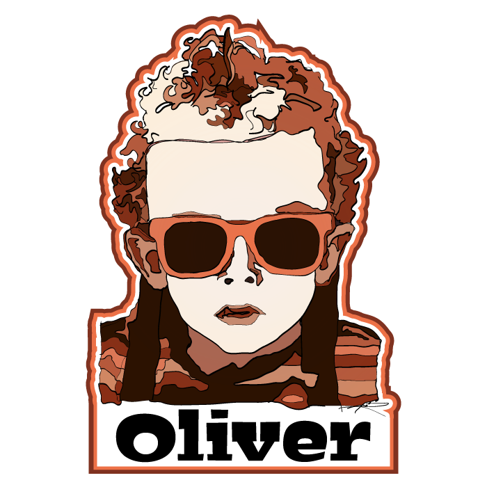
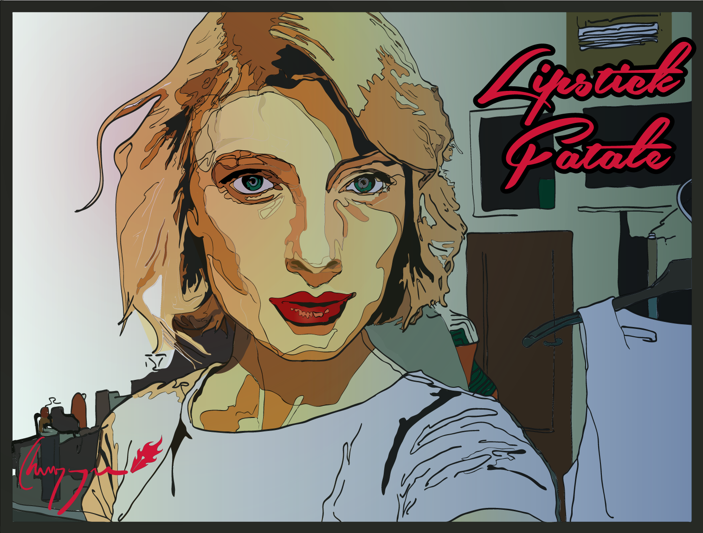
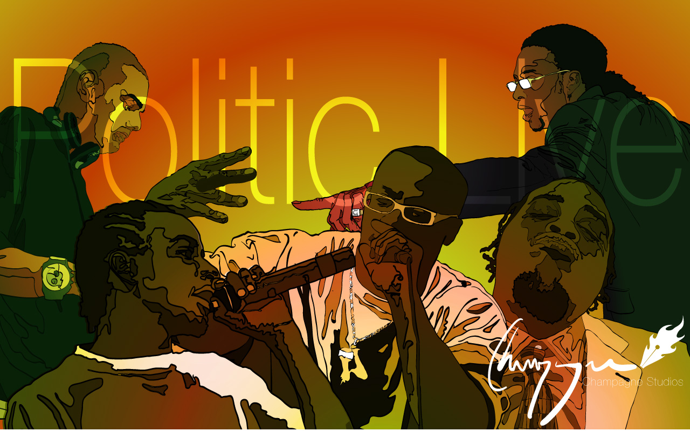

Work Experience
Government of Alberta
Wildfire Lookout Observer
April 2009 - September 2019
Working alone in a remote location for up to 198 days at a time requires good planning and the discipline to follow through with those plans. Weather, wildlife, and administrative changes can challenge Lookout Observers to adapt to unplanned events and conditions. The extreme isolation that comes from being in the woods for so long is only combated by committing oneself to personal development. It was at my first tower that I started learning to code in ActionScript 3.0, and it was at my fire tower where I studied to earn a 4.0 GPA at NAIT. My time in the forest has been a secret weapon that I have used to accomplish my goals during the most successful decade of my life.
Certifications required for Wildfire Lookout Observers includes CPR Level C with AED, a Radio Operator’s License, Incident Command System 100, and successful completion of the Lookout Observer Course at the Hinton Training Centre. Lookout Observers are trained in mapping, wildfire detection, radio protocols, wildfire reporting, safety (including interpersonal conflict management), fall arrest systems, weather recording, and the proper use of bear spray.
CGI
Juniour Analyst
September 2012 - Present
Contracted to the Government of Alberta - Ministry of Advanced Education working on an enterprise level ASP.NET MVC application providing maintenance services. Specialized in SQL Service Reporting Services (SSRS) following design standards laid out in by client guidelines. Often made changes or wrote new SQL procedures and became team subject matter expert for DB unit testing. Made significant contributions to existing web load testing procedures and W3C compliance testing. Also wrote excellent supporting documentation for all work items as well as new guides for testing.
Volunteered with CGI Next and participated in professional development activities. Demonstrated commitment to diversity by accepting volunteer position as liaison between CGI, CGI Next and Canada Learning Code. Gave presentations to Directors, and quarterly town hall, helping to secure increased donations and volunteer engagement from CGI to Canada Learning Code.
Northern Alberta Institute of Technology
Supplemental Learning Leader (Lead)
September 2014 - April 2016
The Digital Media and IT program at NAIT has two first-year courses, Database Fundamentals and Programming Fundamentals, where almost half of the students either receive D’s, F’s, or withdraw from the course. The Supplemental Learning Leader program takes students with high grades and hires them to re-take those courses alongside other students with the intent of providing in-class support and extracurricular group study sessions. Leaders encouraged students to start small personal projects that they could make contributions to throughout the semester and provided fun examples of simple games like hangman and tic-tac-toe or even console apps that could generate practice quizzes based on user input and Bloom’s Taxonomy of Knowledge. This position required excellent communication skills as well as empathy for understanding the stresses that many students were facing. Training also included a course on Mental Health First Aid provided through NAIT’s Professional Development department.
Edmonton Digital Arts College
Guest Instructor
November 2009 - October 2010
Developed a five-day drawing course surveying the human anatomy. Delivered course to three groups of students using multi-media presentations and demonstrations. The goal of this course was “Accessibility”, allowing students who did not have experience with drawing to enjoy the class as much as intermediate and expert artists.
I loved spending one-on-one time with the students and helping them apply the day’s lessons to their portfolio projects. I often found myself staying several hours after class to discuss design concepts and get to know my students. I enjoyed the public speaking and provided excellent criticism by only having one or two suggestions for improvement before pointing out any issues with their work. It is important to understand the feelings of others and be sensitive to their personal level of ability before offering criticism that may otherwise be overwhelming and unhelpful.
Education & Training
NAIT, 2017
Professional Development, MVC I & MVC II
Advanced components and development patterns used when developing web applications using the MVC pattern. This includes using Ajax, JSON, Partial View rendering, Client validation. The student will be introduced to Test Driven Development (TDD) and learn Best Practices using MVC.
NAIT, 2016
Digital Media & IT (Application Development), Diploma
Dean’s Honour Roll (4.0 GPA). Elected, Senate, NAIT Student Association. Jason Lang scholarship recipient. Diploma with designation in Application Development.
Learned to work with ASP.NET in C# and SQL to create validated web-forms and client-server applications. Elected to take both iOS development and Android development as well as Mobile Production I which taught Flash and ActionScript 3.0. Built applications with REST, Backbone.js, jQuery, Handlebars, HTML5 Canvas, Fabric.js, and Less.js. Used Google Books API, Flickr API, and Google Maps API. Learned enterprise-level application development with Java, Apache Maven, JUnit, and PrimeFaces. Comfortable with Git, Visual Studios, Eclipse, and XCode.
For my final project I was co-leader of a 16-person team working on a prototype for U of A researcher Dr. Rose Yeung. Together we used a Laravel/Postgres framework to create a website that would connect clinical researchers with study candidates based on profiles for research studies and for the candidates.
Edmonton Digital Arts College, 2009
Digital Media Production, Diploma
As a student at Guru Digital Arts (now renamed Edmonton Digital Arts College) I worked hard to separate myself as a designer. While my peers focused on Photoshop skills, I doubled my efforts to learn Illustrator. At first I struggled to get my drawing skills to show through in my vector-based artwork but now I feel that I have the ability to make illustrations that feel natural but are easy to work with digitally. I enjoyed learning typography and print design concepts from Joanne Simmons, and especially loved learning about non-destructive workflows from Christopher Caldwell. In April of 2018 I took Adult Beginner Ballet Lessons with EDAC Director Owen Brierly, which I think is a testament to my mentor’s incredible passion and creativity.
Alberta College of Art & Design, 2004
Bachelor of Fine Arts, Incomplete
Studied drawing, sculpture, painting, photography, glass blowing, ceramics, printmaking, and jewelry design. Learned to think creatively and to communicate complex ideas clearly. Also learned how to use critical thinking skills to improve work processes.
Portfolio Samples
Demons (Album Cover)
Oliver (Portrait)
I Wish (Album Cover)
Lipstick Fatale (Portrait)
Politic Live (Portrait)
Locution Revolution (Portrait)